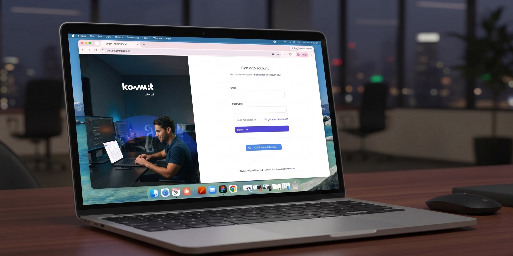
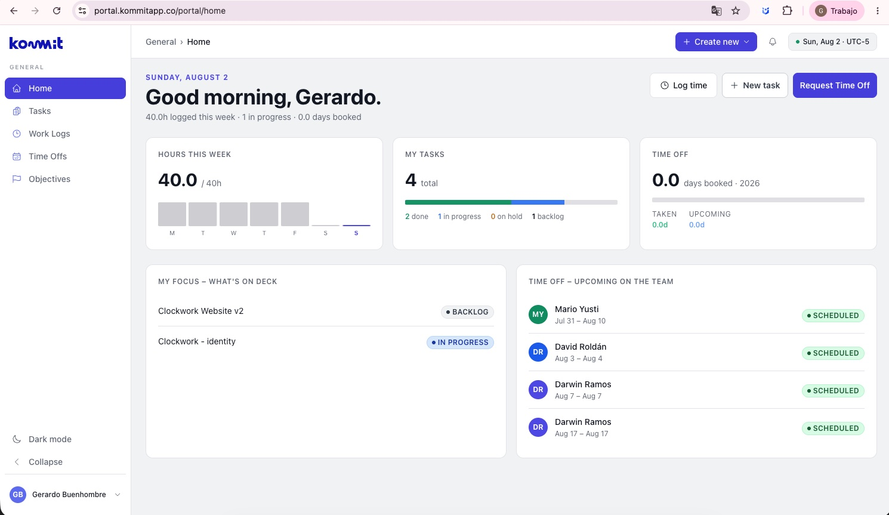
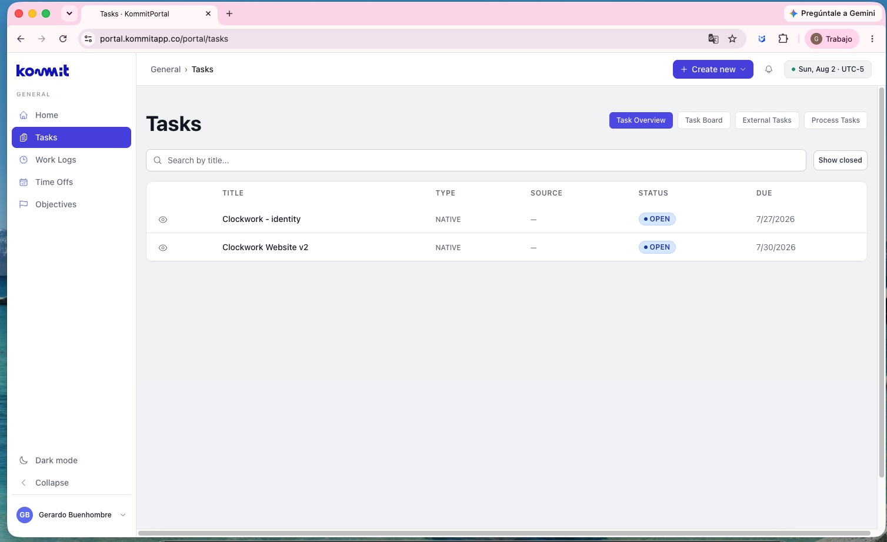
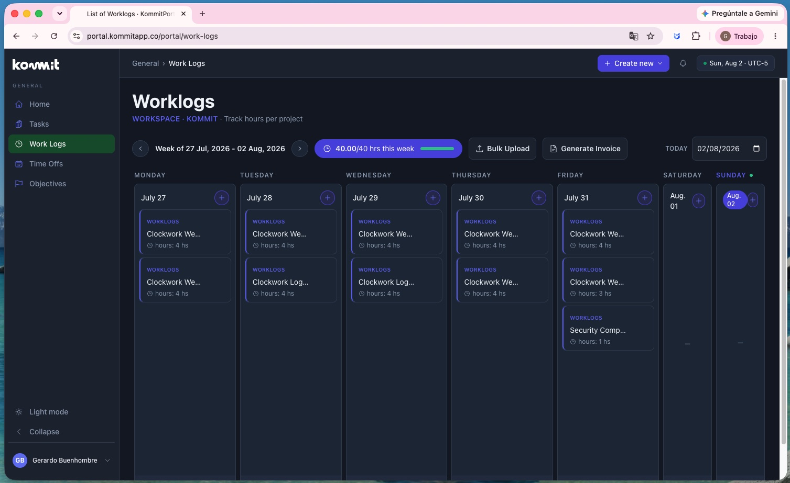
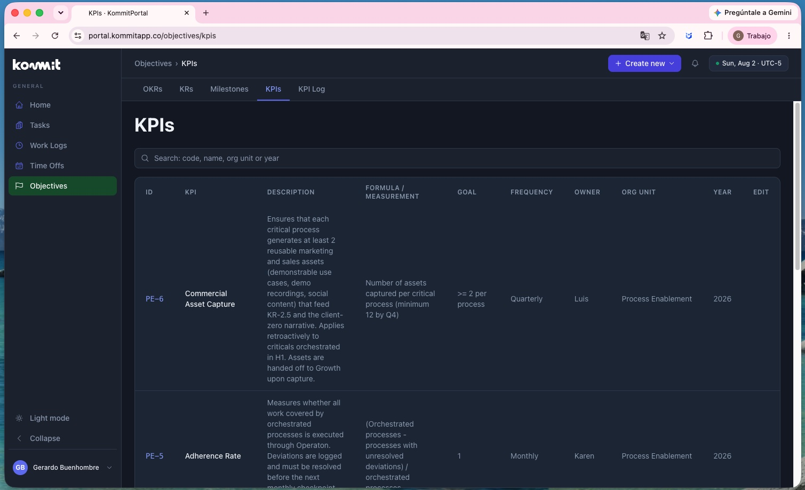

Kommit no tenía un centro operativo centralizado. El equipo distribuido usaba múltiples herramientas (Notion para tareas, Amazon services para procesos, emails) para gestionar el flujo diario de trabajo.
El reto: centralizar todo en un único espacio donde el equipo pudiera registrar horas, gestionar PTO, ver tareas, seguimiento de proyectos — sin saltar entre aplicaciones.
Portal Kommit sería el sistema nervioso operativo de la compañía.


Como Lead Designer, diseñé Portal Kommit como herramienta interna completa:
Definí 12+ módulos independientes pero conectados: Home, Worklogs (registro de horas), Time Off (PTO), Tasks, Projects, Admin, etc. Cada uno con lógica clara pero visual coherente.
Construí un sistema de componentes en React que permitiera: inputs validados, datepickers, tablas con sorting, modales, notificaciones. Componentes que fueran reutilizables pero específicos para operaciones internas.
Diseñé ambos modos en paralelo desde el inicio. Herramientas internas se usan a cualquier hora — dark mode reduce fatiga visual en noches de trabajo.
Un empleado debe poder registrar sus horas en menos de 30 segundos. Solicitar PTO en 1 minuto. Ver sus proyectos asignados al cargar. Velocidad de UX = adopción.

Portal Kommit centralizó completamente el flujo operativo de la compañía. 100k+ daily sessions demuestran que es el asset principal de trabajo diario para el equipo Kommit.
Impacto: Eliminó fragmentación de herramientas. Un empleado entra a Portal, ve su día: qué proyecto, cuántas horas registradas, si hay PTO pendiente, qué tareas tiene asignadas. Transparencia operativa total.
Status hoy: Activo en producción. Sigue siendo el centro operativo donde trabaja el equipo Kommit diariamente.
